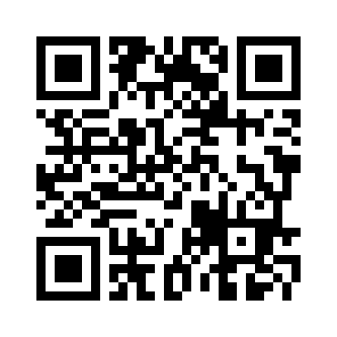

Kalender der lebendigen Zeit Energien
Itschana verbindet den natürlichen 273er-Zyklus mit dem gregorianischen Jahreslauf und macht innere Rhythmen erfahrbar.
Impuls des heutigen Tages
Wird geladen …
Itschana verbindet den natürlichen 273er-Zyklus mit dem gregorianischen Jahreslauf und macht innere Rhythmen erfahrbar.
Mit einem Förderbeitrag von 45 Euro unterstützt du die Entstehung des Natürlichen Kalenders 2026 – und erhältst den Kalender als Geschenk zugesendet.
Verwendungszweck:
„NK 2026 – Name + Adresse“
(damit wir den Kalender korrekt zusenden können)
Dieser QR-Code öffnet den Spendenbereich auf itschana-start:

Alternativ im Browser:
itschana-start.vercel.app/#spenden
Du kannst diesen SEPA-QR mit deiner Banking-App scannen.
Betrag 45 Euro, IBAN und Verwendungszweck
sind automatisch vorausgefüllt.
Falls das Scannen nicht funktioniert, findest du hier
die Daten zum manuellen Eintragen:
Empfänger: Verein Reset – Zurück zum Leben als Mensch
IBAN: AT23 1400 0295 1083 5393
BIC: BAWAATWW
Betrag: 45 Euro
Verwendungszweck: „NK 2026 – Name + Adresse“
Danke für deine Unterstützung – sie macht den Itschana-Weg möglich.